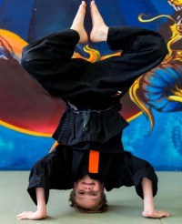

Amituofo
Weng Chun
Weng Chun bedeutet „Ewige Lebenskraft“
Weng Chun zählt aufgrund seiner Prinzipien und Körperarbeit zu den sanften Kampfkünsten.
Die Übenden erlernen die Fähigkeit, mit verschiedenen Kampfdistanzen umzugehen und sich auf realistische Weise sicher zu verteidigen. Ursprünglich aus dem Süd-Shaolin-Kloster stammend, vereint das Weng Chun Kung Fu auf einzigartige Weise die drei Aspekte der traditionellen chinesischen Kampfkunst:
- Selbstverteidigung.
- Gesundheitsförderung.
- Philosophie.
Das Training besteht hauptsächlich aus freien Partnerübungen, bei denen persönliche Entwicklung, gegenseitiger Respekt und Unterstützungsbereitschaft in einer angstfreien und freundlichen Atmosphäre die Grundlagen für einen erfolgreichen Lernweg bilden. Es werden 5 unterschiedliche Distanzen unterrichtet: Waffendistanz, weite Schlag- und Trittdistanz, Nahkampf, Wurfdistanz und Bodenkampf.
Prinzipien
Es gibt 5 subjektive und 7 objektive Prinzipien.
Die subjektiven Prinzipien beziehen sich auf den Menschen, seine Haltung, seine Motivation und seine Ziele.
Die objektiven Prinzipien beschreiben, wie Kräfte und Energien in Bewegung aufeinander wirken und sich verhalten.
Die Schüler lernen, diese Prinzipien in Konfliktsituationen umzusetzen, um sich spontan, angemessen und sicher zu verteidigen. Praktizierende streben einen zentrierten Zustand der Offenheit an, um dem natürlichen Fluss zu folgen.
Philosophie
Das Weng Chun Kung Fu ist stark von den Prinzipien und der Philosophie des Chan-Buddhismus beeinflusst.Alles ist miteinander verbunden. Trennung ist Illusion. Nichts existiert isoliert, sondern alles entsteht durch Beziehung zu anderem.Sifu Stefan Reis
Übende nutzen die Angriffskraft, bauen Kontakt zum Gegner auf und lenken ihre eigene Kraft in dessen Zentrum. Statt Blockbewegungen gibt es aufnehmende, umlenkende und eindringende Aktionen.
Alles befindet sich in einem ständigen Wandel. Energien (und Dinge) entstehen, entfalten sich und vergehen wieder.Sifu Andreas Hoffmann
Im Weng Chun ist ständiger Bewegungsfluss in Partnerübungen und im Kampf essenziell. Festhalten an Techniken oder Vorstellungen verhindert angemessene Reaktion auf aktuelle Geschehnisse.
Sifu Reichelt
Sifu Thomas Reichelt
Lehrer und Meister im Weng Chun Kung Fu
4. Meistergrad
Werdegang
- 2004 Aufnahme als direkter Schüler von Großmeister Flavio Behring.
- 2003 Graduierung zum Sifu im Weng Chun.
- 1995 Studium des Brazilian Jiu Jitsu unter Großmeister Andreas Hoffmann.
- 1993 Graduierung zum Übungsleiter im Weng Chun.
- 1991 Studium des Weng Chun unter Großmeister Andreas Hoffmann.
Auszeichnungen
- 2000 Vize-Meister im Chi Sau Freikampf.
- 1999 deutscher Meister in Chi Sau Freikampf.
- 1998 deutscher Meister in Tai Chi Pushing Hands.
Kursplan
Kung Fu für Sie und Ihn
Keine Sorge, ob Sie zu alt oder unsportlich für Weng Chun sind. Weng Chun ist die weiche Kampfkunst von Shaolin, die Koordination, Geschicklichkeit und Fitness fördert. Jedes Training bringt mehr und mehr Körpergefühl und Entspannung im Alltag.Partnerübungen sind vorherrschend, aber Sie brauchen keinen Partner mitzubringen. Im Unterricht wechseln sich die Übenden, um Distanz und Reichweite zu vermitteln. Sie werden an fünf Distanzen auf drei Ebenen herangeführt.
Besuchen Sie gerne die Kung Fu Schule in Erlangen, und bei Fragen stehe ich persönlich zur Verfügung.
Gerne können Sie zur Probe zwei Mal kostenlos am Training teilnehmen. Mitzubringen sind lediglich bequeme Trainingskleidung und sauber Sportschuhe.
Ich biete auch Privatunterricht und Training in kleinen Gruppen an. Die Termine werden individuell vereinbart und liegen außerhalb der regulären Trainingszeiten.
Kinder Kung Fu
Ihr Kind kann ab 6 Jahren eine altersgerechte Selbstverteidigung erlernen und dabei spielerisch sein natürliches Körpergefühl entwickeln.
Spezielle Übungen stärken die Muskulatur und fördern gleichzeitig Flexibilität. Im Training werden Disziplin, Selbstbewusstsein, Konzentration und Durchhaltevermögen vermittelt, mit Respekt gegenüber Trainingspartnern. Elemente aus dem Tiere Kung Fu wie Tiger, Kranich, Leopard, Schlange, und Drache, sowie Yin/Yang-Bewegungen und die fünf Elemente (Feuer, Wasser, Erde, Metall und Holz) werden gelehrt. Haben wir Ihr Interesse geweckt? Wir freuen uns darauf, Ihr Kind und Sie in unserer Kung Fu Schule in Erlangen zu begrüßen.
Ausbildung
Schärpen
Ausbildungsvoraussetzungen
- Gesundheitsattest.
- Polizeiliches Führungszeugnis.
- Vorkenntnisse sind nicht erforderlich.
- Quereinstieg nach Anfrage möglich.
- Aktueller Nachweis des erste Hilfe Kurses.
Ausbildungsvoraussetzungen
- Zertifikat Trainer (rote Schärpe).